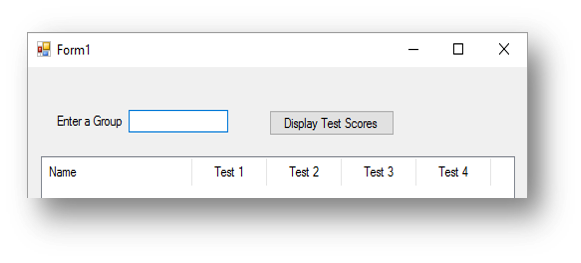

Key Syntax
Below is a summary of the key commands you may need in your controlled assessment as well as examples of them being used:
| Command | Description | Example of Use |
Dim variableName As String
Dim variableName As Integer
Dim variableName As Decimal
Dim variableName As Boolean |
Declare a variable to store data to a particular data type | Dim name As String = “Bob”
Dim age As Integer = 15
Dim attendance As Decimal = txtAttendance.text
Dim tired As Boolean = True
</tr>
|
MessageBox.Show() |
Used to create a popup box on screen with text in. | Messagebox.Show(“Hello World”)If you wish to join a string to a variable, you can use a + or a & like below:Dim name As String = “Bob”
Messagebox.Show(“Hello “ + name)
Messagebox.Show(“Hello “ & name)
|
InputBox() |
Used to take input from a user, if you wish to store this input you need to assign it to a variable |
InputBox(“What is your name”)If you want to assign to a variable, it needs to be:Dim variableName As String = InputBox(“Text to display”) |
ListBoxName.Items.Add(data) |
Used to add information to a list box | Dim name as String = InputBox(“Enter your name “)
lstOutput.Items.Add(“Hello “ + name)
This program will ask the user to enter their name and store it in the name variable. It will then add to the list box “Hello” plus their name. If they entered the name Bob, it would say Hello Bob. |
ListBoxName.Columns.Add("Text", Size, Alignment) |
This is for use with a ListView box. It will create headings along the time of the list view box. If you want 4 headings, you have to have four of these. |
lstOutput.Columns.Add("Name",150,HorizontalAlignment.Center)
This will add a heading to a listview called "Name" that is centre aligned. An example of what the headings look like can be seen below: |
vbNewLine |
Creates a new line inside a message box. | Messagebox.show(“Name: “ + name + vbNewLine + “Age:” + age) |
.ToString |
Converts a variable to a string, should be used in a message box command to convert a variable that is not a string back to a string | Messagebox.Show(“The total is “ + total.ToString) |
.Text |
To be used after a form control to inform the program that there is text entered | txtName.TextFor example:
Dim name As String = txtName.Text
|
Decimal.Round() |
Rounds a variable to the number of decimal places specified. | Decimal.Round(variableName,dp) where dp is the number of decimal places. For example:
total = Decimal.Round(total,2))
|
Decimal.Parse(variableName) |
Converts a variable that is not currently stored as a decimal to a decimal number. | Decimal.Parse(variableName)For example:
Dim number1 As String = "1245.34"
Dim number2 As String = "45.65"
Dim total As Decimal = Decimal.Parse(number1) +
Decimal.Parse(number2)
|
CInt() |
Converts a variable that is not currently stored as an integer to an integer. | CInt(variableName)For example:
total = CInt(number1) + CInt(number2)
|
If condition Then
DO IF TRUE
Else
DO IF FALSE
End If
|
An IF statement which checks a condition and then does one of two things |
If age=15 Then
Messagebox.Show(“You can go to the party”)
Else
Messagebox.Show(“You cannot go to the party”)
End If
|
If condition Then
DO IF TRUE
ElseIf condition Then
DO IF TRUE
Else
DO IF FALSE
End If
|
An if statement that makes use of ElseIf to check two conditions, it will do one thing if the first condition is true, something else if the second condition is true, and if neither are two will do the false part. |
If number1>number2 Then
Messagebox.Show(“Number 1 is bigger”)
ElseIf number2>number1 Then
Messagebox.Show(“Number 2 is bigger”)
Else
Messagebox.Show(“The numbers are the same”)
End If
|
For x = a to b Step 1
code to loop
Next
code to execute after the loop
|
This is a for loop that will repeat the code inside of it a set number of times. A is the number at which the loop starts, B is the number at which the loop ends. |
For x = 0 to 9 Step 1
number = InputBox(“Enter a number”)
total = total + number
Next
This program will loop ten times. Inside the loop each time it will ask for a number and add to the total. |
While CONDITION TRUE
code to loop
End While
code to execute after the loop
|
This is a while loop that will repeat the code inside of it while a condition is met. The condition can be anything you want. |
While age<18
age = InputBox(“Please enter an age:”)
End While
Messagebox.Show(“You are old enough to see the film”)
This while loop will repeat while the age is less than 18. Every time the user enters an age if they enter a number less than 18 it will ask them again. When they enter an age over 18 it will then display the message box command that comes after the loop. |
Do Until CONDITION TRUE
code to loop
Loop
code to execute after the loop
|
This is a do until loop that will repeat the code inside of it until the condition is met. The condition can be anything you want. The condition works the opposite of the while loop |
Do Until age>18
age = InputBox(“Please enter an age:”)
Loop
Messagebox.Show(“You are old enough to see the film”)
This do until loop will repeat until the age is greater than 18. Every time the user enters an age if they enter a number less than 18 it will ask them again. When they enter an age over 18 it will then display the message box command that comes after the loop. |
Dim arrayListName As New ArrayList()
|
This will create a blank list with the name of your choice. This is an array but one in which you can easily add items to it in a list format. |
Dim names As New ArrayList()
This will create a blank list called names that can then store multiple names when they are appended (added) to it. |
ListName.Add(data)
|
This will add the data that is in the brackets to the list. |
Dim names As New ArrayList()
names.add(“Bob”)
names.add(“Sally”)
Messagebox.Show(names(1))
This code will create a blank list called names and then add the names Bob and Sally to it.
The print command at the end would print Sally as lists start at zero. The second name in the list is Sally which would be stored in element 1.
|
ceiling(number)
|
This function rounds up a number to the nearest whole number. This is part of the math library |
Imports System.Math
Dim number As Decimal = InputBox(“Enter a decimal number”)
Dim roundup As Integer = ceiling(number)
Messagebox.Show(roundup)
When using the ceil function you must import the math library, the first line of code at the top does this.
This program takes a decimal input from the user, then uses ceil to round it up to the next whole number and then prints it. E.g. if the user entered 5.345 it would print 6.
|
Dim variable As New Streamreader(filename)
|
This will open a file to read the contents |
Dim fileReader As New StreamReader("C:\staff.csv")
This will open a file called staff.csv with the variable name fileReader. NOTE: You must put the full path of the file within the brackets
|
Dim variable As New Streamreader(filename)
Do While variable.EndOfStream = False
DO THIS CODE
Loop
line 2 being explained |
This will create a loop that will repeat for the number of lines in hte file |
Dim fileReader As New StreamReader("C:\staff.csv")
Do While fileReader.EndOfStream = False
MessageBox.Show(fileReader.ReadLine)
Loop
This will open a file called staff.csv and then read each line in the file. It will then display each line from the file in a message box one after another until all lines have been read.
|
Dim filevariable As New Streamreader(filename)
Dim variable As Array
Do While variable.EndOfStream = False
variable = filevariable.ReadLine.split(“,”)
Loop
line 2 & 4 being explained |
Line 2 - this defines the array that will store the line of information from the file when read. Line 4 - This will read a line from the file and split the contents of the line every time it finds a comma in a different element of the list/array. |
Dim fileReader As New StreamReader("C:\staff.csv")
Dim details As Array
Do While fileReader.EndOfStream = False
details = fileReader.ReadLine.Split(",")
MessageBox.Show(details(0))
Loop
This will open a file called staff.csv in read mode and then loop through the file. Each time through the loop it will read a line and split the contents of the line every time it reaches a comma into a different element of the array. It will then print whatever is in element 0 of that array. i.e. the first piece of data before the first comma.
|
Dim filevariable As New Streamreader(filename)
Dim variable As Array
Do While variable.EndOfStream = False
variable = filevariable.Readline.split(“,”)
If condition Then
DO IF MET
End If
Loop
line 5 & 6 being explained |
An if can be used to check pieces of data stored in the array and see if it matches what you want. You can then program it to respond in a particular way if it does. |
Dim email As String = txtEmail.Text
Dim fileReader As New StreamReader("C:\staff.csv")
Dim details As Array
Do While fileReader.EndOfStream = False
details = fileReader.ReadLine.Split(",")
If details(2) = email Then
MessageBox.Show("Match Found")
Loop
This code will do what the previous code did, but check to see if what is in element 2 of the array details matches the email address entered by the user. If it does it will say “Match found” in a message box.
|
filevariable.close()
|
This will close the variable that has created the connection to the file. |
Dim fileReader As New StreamReader("C:\staff.csv")
fileReader.close()
This will close the connection to the file that it has just opened.
|
Dim variable As New StreamWriter("filename",True)
|
This will open a connection to the file named in append mode. |
Dim fileWriter As New StreamWriter("C:\staff.csv",True)
This will open a file called staff.csv in append mode with the variable name writefile. Append mode means ‘add’ to the file. The ,True after the filename means it will add to the file rather than overwrite what is in the file.
|
Dim variable As New StreamWriter("filename",True)
variable.writeLine(data to write)
line 2 being explained |
This will write data to a file. |
Dim fileWriter As New StreamWriter("C:\staff.csv",True)
fileWriter.writeLine("Bob" & "," & "Barnes" & "," & "Outwood Grange Academy")
This will open a file called staff.csv in append mode. It will then write to the file the name of the staff member and the school they work at. You can also write variables to the file, like so:
Dim firstname As String = txtFirstname.Text
Dim surname As String = txtSurname.Text
Dim school As String = txtSchool.Text
Dim fileWriter As New StreamWriter("C:\staff.csv",True)
fileWriter.writeLine(firstname & "," & surname & "," & school)
NOTE: The use of a comma (,) to separate each piece of data
|
Function functionname():
CODE to run in function
End Function
|
This will define a function that has no values passed into it. |
Function hello():
MessageBox.Show(“Hello from a function”)
hello()
This code creates a function called hello. Inside that function it has some code that says to print a message. After the function, in the main program it is called by typing the name of the function followed by two brackets ().
|
Function functioname(parameters):
CODE to run in function
Return variable/value
End Function
|
This will define a function that has a parameter passed into it to be used in the function. It also has a return value. NOTE: With a function you do not have to have a return value. |
Function multiply(ByVal a As Integer,ByVal b As Integer):
Dim answer As Integer = a * b
return answer
Dim num1 As Integer = 10
Dim num2 As Integer = 9
MessageBox.Show(multiply(num1,num2))
This code creates a function called multiply and has 2 values passed into it that are referred to as a and b. Inside the function it multiplies to the two together and returns the answer back to the main program. The main program below has two variables num1 and num2. It passes these values into the function and prints the result.
This code uses a function and passes a parameter/value into it, however it does not return anything back to the main program. |
variable = “text”
print(variable[x])
|
This is used to access characters in a string, by replacing the x for the character number you want. |
Dim word As String = “Hello World”
Dim letter As Char = word(0)
MessageBox.Show(letter)
The code will access the first character (0) from the word variable and print the letter. In this example it would print “H” |
variable.StartsWith(‘x’)
|
This checks if the variable starts with a particular character |
Dim word As String = “Hello World”
word.StartsWith(“W”)
This code would return False as the variable word does not start with a capital W |
variable.EndsWith(‘x’)
|
This checks if the variable ends with a particular character |
Dim word As String = “Hello World”
word.EndsWith(“d”)
This code would return True as the variable word does end with a lower case d |
Len(variable)
|
This is used to find the length of a variable |
Dim word As String = “Hello World”
Len(word)
The len() function will return the value 11 as there are 11 characters (including spaces) |
Left(variable,x)
|
This is use to get the x leftmost characters from a string |
Dim word As String = “Hello World”
MessageBox.Show(Left(word,3))
This example would display "Hel" in the message box as these are the three leftmost characters. |
Right(variable,x)
|
This is use to get the x rightmost characters from a string |
Dim word As String = “Hello World”
MessageBox.Show(Right(word,2))
This example would display "ld" in the message box as these are the two rightmost characters. |
Mid(variable,x,y)
|
This is use to get extract certain characters from a variable/string starting in the middle of the string |
Dim word As String = “Hello World”
MessageBox.Show(Mid(word,4,5))
This example would display "lo Wo" in the message box as it starts at character 4, the "l" and then displays the next 5 characters (including any spaces) |
UCase(variable)
|
This is used to change the case of a string or variable to upper case |
Dim word As String = “Hello World”
MessageBox.Show(UCase(word))
This code would display HELLO WORLD on screen |
LCase(variable)
|
This is used to change the case of a string or variable to lower case |
Dim word As String = “Hello World”
MessageBox.Show(LCase(word))
This code would display hello world on screen
|
IsNumeric(variable)
|
This checks if the variable only contains digits |
Dim number As String = "12345"
IsNumeric(number)
This code would return True as the variable number contains only digits |
Abs(variable)
|
This finds the absolute value of a variable i.e. removes any negative |
Imports System.Math
Dim number As Decimal = -45.65
Dim answer As Decimal = Abs(number)
MessageBox.Show(answer)This code would return 45.65 as Abs() removes any negative from a number |
Ceiling(variable)
|
This finds the next whole number up from the number entered |
Imports System.Math
Dim number As Decimal = 45.23
Dim answer As Decimal = Ceiling(number)
MessageBox.Show(answer)This code would return 46 as Ceiling() always rounds up to the next whole number |
Floor(variable)
|
This finds the next whole number down from the number entered |
Imports System.Math
Dim number As Decimal = 45.78
Dim answer As Decimal = Floor(number)
MessageBox.Show(answer)This code would return 45 as Floor() always rounds down to the next whole number |
Sqrt(variable)
|
This finds square root of a variable |
Imports System.Math
Dim number As Integer = 16
Dim answer As Decimal = Sqrt(number)
MessageBox.Show(answer)This code would return 4 as sqrt() square roots a number, the square root of 16 is 4. |
Ceiling(variable / 10) * 10
|
This finds the next higher multiple of 10 from the value in the variable. |
Imports System.Math
Dim number As Integer = 16
Dim answer As Integer= ceil(number / 10) * 10
MessageBox.Show(answer)This code would return 20 as the next multiple of 10 from 16 is 20. |